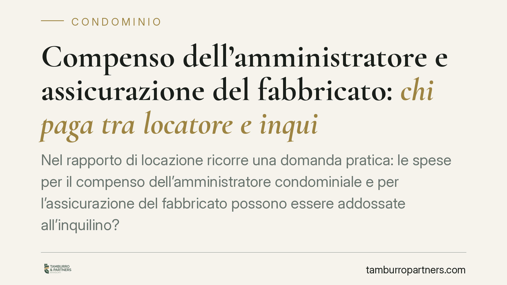

Compenso dell'amministratore e assicurazione del fabbricato: chi paga tra locatore e inquilino
Nel rapporto di locazione ricorre una domanda pratica: le spese per il compenso dell'amministratore condominiale e per l'assicurazione del fabbricato possono essere addossate all'inquilino? La risposta è negativa. Si tratta di costi che gravano sul proprietario e non rientrano tra gli oneri accessori a carico del conduttore. Vediamo perché e cosa fare quando il contratto dispone diversamente.

Il caso
Capita di frequente che nel contratto di locazione, o nei rendiconti annuali trasmessi all'inquilino, compaiano voci come il compenso dell'amministratore di condominio o il premio dell'assicurazione del fabbricato, addebitate al conduttore insieme alle spese ordinarie.
La questione non è di dettaglio: incide sull'esatto ammontare di quanto l'inquilino deve versare ogni anno e sulla legittimità delle richieste di pagamento avanzate dal locatore.
Inquadramento normativo
La ripartizione degli oneri accessori nella locazione abitativa è disciplinata dall'art. 9 della Legge 27 luglio 1978, n. 392. La norma pone a carico del conduttore, salvo patto contrario, gli oneri legati al godimento dell'immobile e alla fruizione dei servizi comuni: pulizia, funzionamento e ordinaria manutenzione dell'ascensore, fornitura di acqua, energia elettrica, riscaldamento e condizionamento delle parti comuni, spazzatura, portineria.
Proprio in materia di portineria, l'art. 9 prevede una ripartizione differenziata: il conduttore è tenuto al 90% del costo del servizio di portierato (e, in molte gestioni, della relativa pulizia connessa), restando il residuo 10% a carico del proprietario. Si tratta di un criterio legale che presuppone un riparto analitico voce per voce.
Restano invece fuori dall'elenco dell'art. 9 le spese che non attengono al godimento del bene ma alla sua amministrazione e conservazione patrimoniale. Tra queste:
- il compenso dell'amministratore condominiale, che remunera un'attività di gestione dell'ente condominio e non un servizio goduto dall'inquilino;
- il premio dell'assicurazione del fabbricato, che tutela il valore dell'immobile nell'interesse del proprietario.
Entrambe le voci gravano perciò sul locatore.
Quanto alla sorte delle clausole che tentano di ribaltare questi costi sull'inquilino, il fondamento della loro invalidità va individuato con precisione. L'art. 79 della Legge n. 392/1978 sancisce la nullità delle pattuizioni dirette a limitare la durata legale del contratto o ad attribuire al locatore vantaggi in contrasto con le disposizioni della legge, tra cui la disciplina degli oneri accessori dell'art. 9. È questa la norma — non l'art. 13 della L. 431/1998 — a rendere nulla la clausola che pone a carico del conduttore spese che la legge assegna al proprietario. L'art. 13 della L. 431/1998 opera su un piano diverso, colpendo i patti volti a occultare un canone superiore a quello dichiarato: materia distinta da quella qui trattata.
Sul punto la giurisprudenza di merito e di legittimità tende a distinguere con nettezza tra oneri di godimento (trasferibili al conduttore) e spese di amministrazione e conservazione (a carico del proprietario). In assenza di estremi puntuali verificati, ci si limita a segnalare l'orientamento senza attribuire pronunce specifiche.
Implicazioni pratiche
Per l'inquilino: le richieste di pagamento del compenso dell'amministratore o del premio assicurativo non sono dovute, anche se il contratto contiene una clausola in tal senso. La clausola, in quanto in contrasto con la disciplina inderogabile, è priva di effetti.
Per il locatore: inserire simili voci nel riparto espone a contestazioni e all'inefficacia della pretesa. È preferibile predisporre un rendiconto trasparente, che distingua le voci di competenza del conduttore da quelle di competenza propria.
Sulle somme già versate in eccesso, il conduttore può in linea di principio agire per la ripetizione di quanto pagato senza titolo. La qualificazione dell'azione e l'individuazione del termine di prescrizione — e in particolare del *dies a quo*, cioè del momento da cui il termine inizia a decorrere — vanno valutate caso per caso, tenendo conto della natura periodica dei versamenti e della data di ciascun pagamento. Non è quindi corretto affermare in modo generico l'applicazione automatica di un unico termine decennale a tutte le somme.
Cosa fare in concreto
- Richiedere il riparto analitico: pretendere dall'amministratore o dal locatore il rendiconto voce per voce, per verificare la natura di ciascuna spesa addebitata.
- Isolare le voci non dovute: individuare compenso dell'amministratore e premio assicurativo, che non rientrano tra gli oneri del conduttore.
- Conservare le quietanze: mantenere copia dei pagamenti effettuati, utile in caso di futura richiesta di restituzione.
- Contestare per iscritto: in presenza di addebiti indebiti, è opportuno formulare contestazione formale, indicando le voci non dovute.
- Valutare la posizione con un professionista: prima di agire per la ripetizione, verificare tempi e modalità dell'azione con riferimento alle singole annualità.
In sintesi
Compenso dell'amministratore e assicurazione del fabbricato non sono oneri accessori del conduttore. Le clausole che li trasferiscono sull'inquilino sono nulle ai sensi dell'art. 79 L. 392/1978. Un rendiconto trasparente e la corretta qualificazione delle voci prevengono la gran parte delle controversie.
---
*Contributo informativo a cura di Tamburro & Partners Avvocati - Avv. Giuseppe Tamburro. Non costituisce parere legale.*
Ogni condominio ha una storia a sé.
Se gestisci un'amministrazione e vuoi un confronto su una specifica questione condominiale, scrivi allo studio. Ti rispondiamo entro un giorno lavorativo.